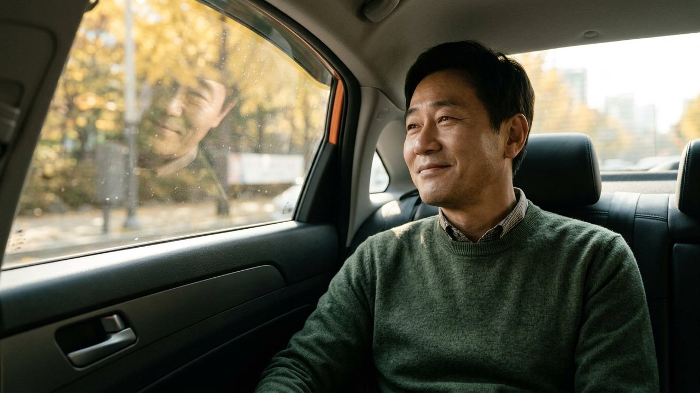
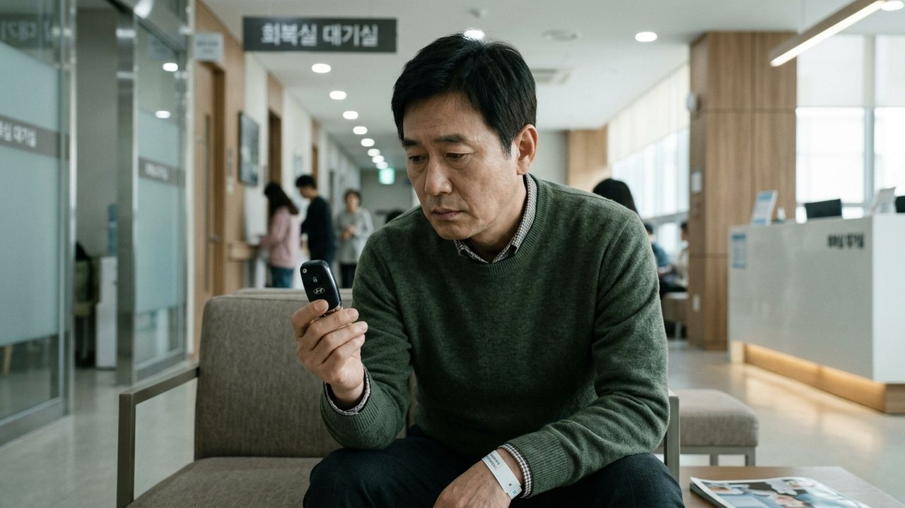
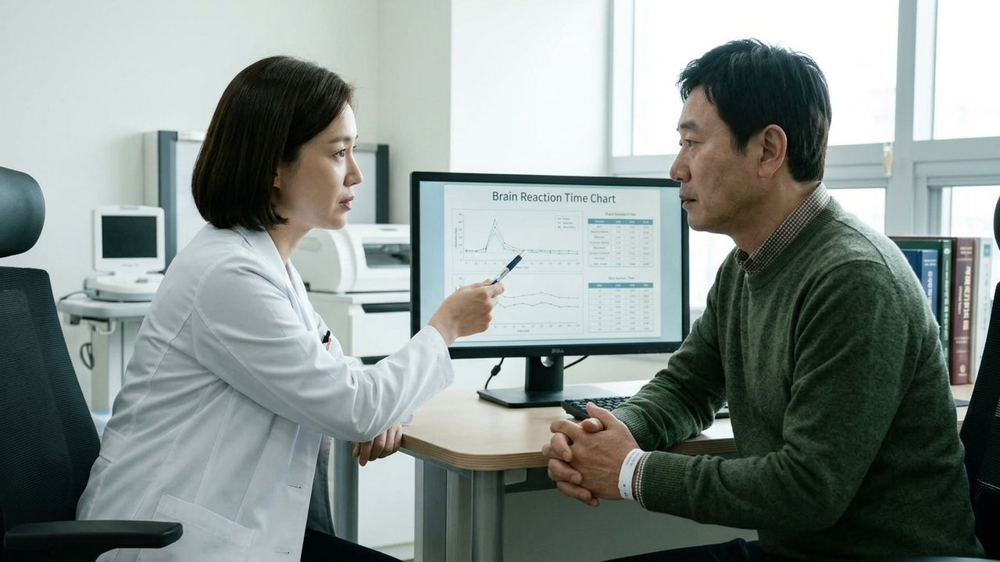
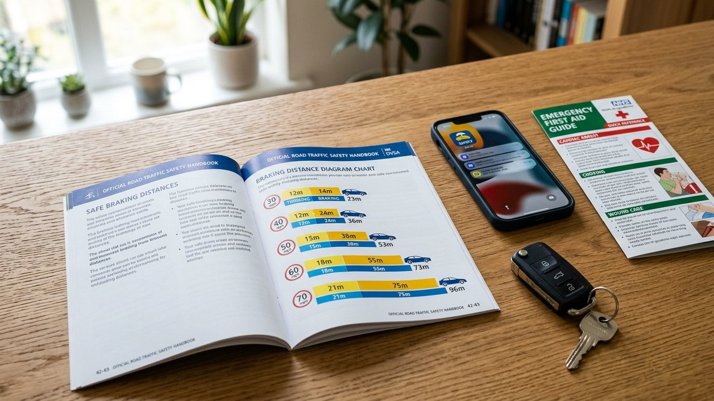
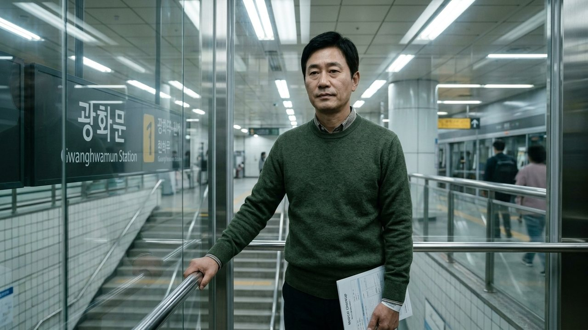
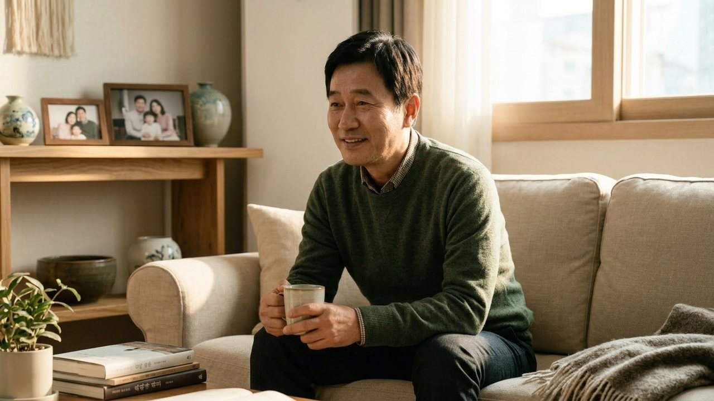

수면내시경 예약할 때 검진센터에서 "검사 당일 운전 절대 금지!"라는
주의 문자를 분명히 신신당부받으셨을 겁니다.
하지만 막상 회복실 침대에서 눈을 떴을 때 너무나 말짱해진 머리에
"어? 나 잠 다 깼는데? 잠깐 살살 몰고 가는 건 괜찮지 않나?"
하고 마음속으로 위험한 유혹을 느끼신 적 있으시죠?
내 머리는 다 깼다고 느끼지만, 뇌 신경 반응 속도는
음주 단속 면허 취소 수치와 똑같은 지체 상태에 빠져 있습니다.
"오후에 2시간 푹 자고 일어나서 살살 운전하는 건 괜찮지 않나요?"
"보호자 없이 혼자 검진센터 갔는데 버스타고 집에 가도 되나요?"
오늘 에디터 혀니가 수면내시경 후 절대 지켜야 할
자가운전 금지 골든타임과 안전 귀가 수칙을 명쾌하게 풀어드립니다!

수면내시경에 쓰이는 프로포폴이나 미다졸람 성분은
투여가 끝나면 겉보기에 의식이 아주 신속하게 깨어납니다.
하지만 의학계에서는 이를 '주관적 각성 착각'이라 부릅니다.
생각하는 의식은 깨어났어도, 돌발 상황을 피하는 반사 신경은
0.3초에서 0.5초 이상 멍하게 늦게 반응하거든요.
시속 60km로 달릴 때 반응 속도가 0.3초만 늦어져도
자동차가 브레이크를 잡기 전 관성으로 5m나 더 미끄러져 나갑니다.
횡단보도에서 갑자기 튀어나오는 보행자나 앞차의 급정거 앞에서
이 5m의 차이는 돌이킬 수 없는 중대한 사고로 이어지게 됩니다.

소화기내시경학회 공식 표준 지침에서는 진정내시경 후
최소 12시간에서 만 24시간 동안 자가운전을 엄격히 금지합니다.
체내 지방에 숨어 있던 약물 기운이 서서히 다시 혈액으로 뿜어져 나오는
'재분포 현상' 때문에 검사 4시간 뒤에 갑작스러운 졸음이 쏟아질 수 있거든요.

게다가 도로교통법 제45조에 따르면 마취제 영향 아래 운전하는 것은
'약물 운전'으로 분류되어 3년 이하 징역형이나 무거운 벌금에 처해집니다.
자가운전은 반드시 밤새 잠을 푹 자고 다음 날 아침 식사 후 재개하시고,
부득이 차를 가져오셨다면 망설임 없이 정식 대리운전을 부르셔야 합니다.

혼자 검진센터를 방문하신 분들이 무엇보다 흔하게 겪는 사고는
교통사고가 아니라 바로 지하철역 가파른 계단에서 구르는 낙상 사고입니다.
약 기운으로 평형감각이 둔해져 계단 턱을 헛디디며
발목 염좌나 골절로 이어지는 안타까운 일이 정말 자주 일어납니다.
혼자 대중교통으로 돌아가실 때는 가파른 계단을 철저히 피하시고,
반드시 역사 내 승강기(엘리베이터)를 찾아 탑승하세요!
무엇보다 지혜로운 방법은 검진센터 로비에서 택시를 호출하여
집 문 앞까지 편안하게 도어 투 도어로 귀가하시는 것입니다.

건강검진의 진정한 마무리는 검사를 마치는 순간이 아니라,
지친 내 몸을 이끌고 내 집 거실 소파에 안전하게 발을 들이는 순간입니다.
오늘 하루만큼은 급한 약속과 운전대를 모두 내려놓으시고,
따뜻한 미온수 한 잔과 함께 편안한 휴식으로 속과 몸을 달래보세요.
여러분은 내시경 검사 날 차를 두고 가시나요, 대리운전을 부르시나요?
평소 검진 날 나만의 안전 귀가 노하우를 댓글로 편하게 남겨주세요 😊
#수면내시경운전 #수면내시경후운전 #수면내시경당일운전 #수면내시경운전시간 #수면내시경보호자 #수면내시경혼자귀가 #수면내시경자가운전 #수면내시경대중교통 #건강검진운전 #위내시경운전 #수면내시경주의사항 #에디터혀니